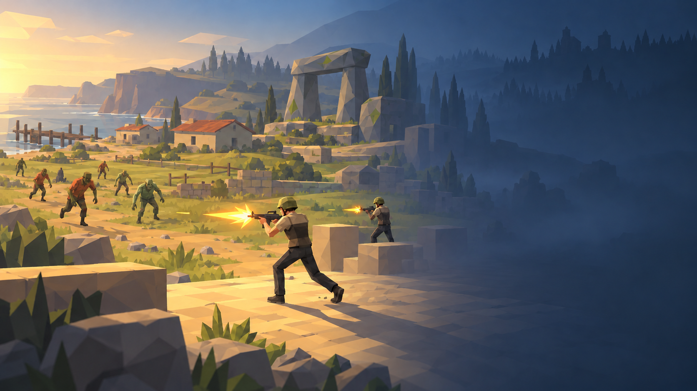
以主角和普通感染敌人的战斗为核心，串联草地、码头、聚落、石构遗迹等代表元素；右侧留给实际菜单。不是十关地图，也不承诺这些场景在游戏里物理相连。
主菜单 × 1 · 联机大厅 × 1 · 逐关加载图 × 10
本版根据完整十关的正式资源取材。第三关使用已经采用的草地农场；每张加载图突出自己的场景特征，避免重复海岸与同一种敌人。
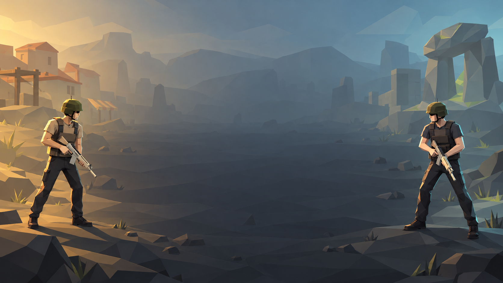
双人站位与冷暖侧光表达协作；中央留给房间信息。远景只用低对比地标呼应旅程，不绑定海岸，也不新增基地。
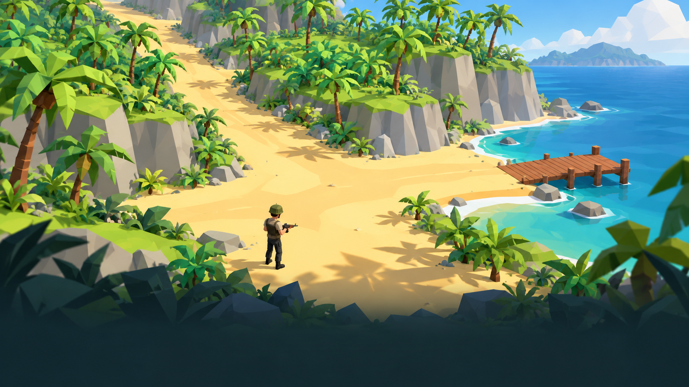
沙滩、棕榈、崖壁和蓝海，保留第一关的清晰开阔感。
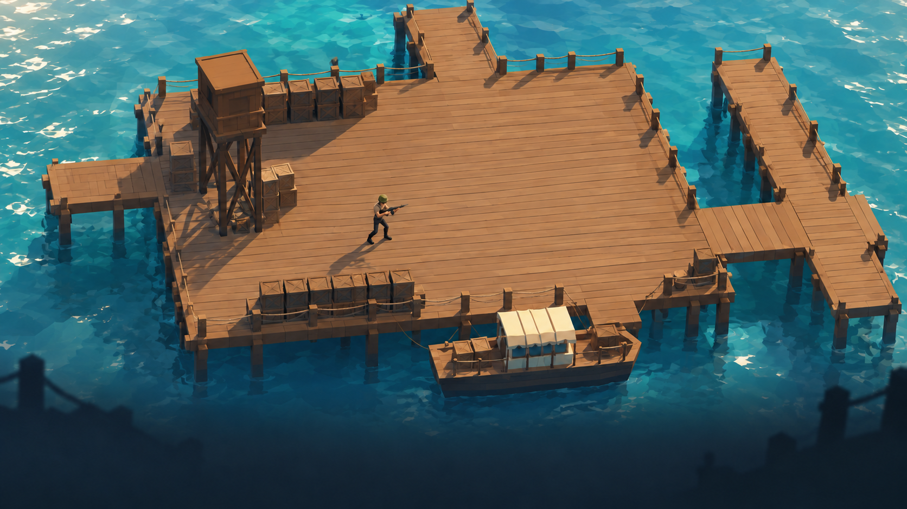
连续木平台、货箱、吊架和停船，突出码头的木质结构。
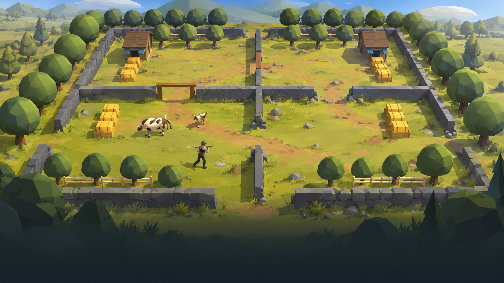
已采用的草地与泥土、石墙、棚屋、草垛和牛；不恢复旧雪景。
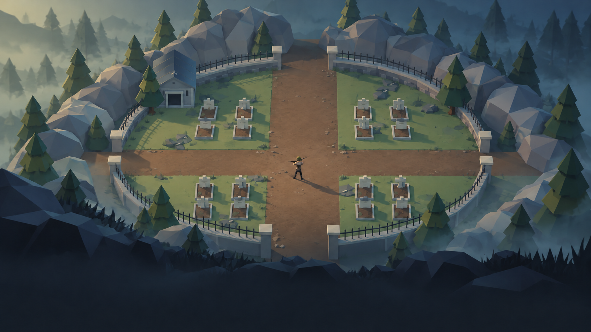
墓列、十字土路、铁栏、灰石与针叶树，以冷灰绿雾气拉开气氛。
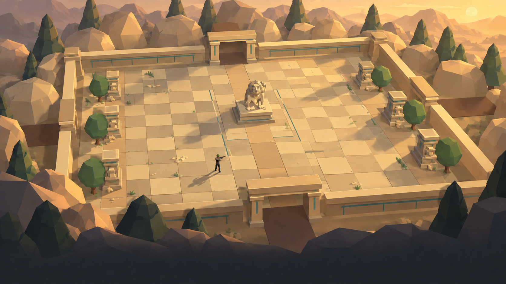
暖砂岩、方砖、柱座与中央石雕，突出规整的神庙庭院。
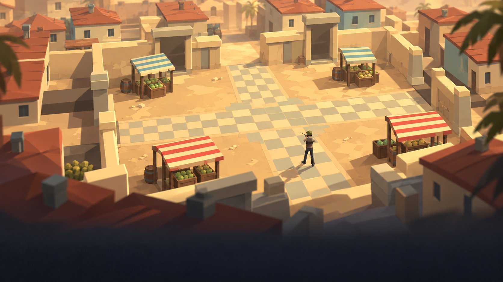
红瓦房、条纹摊棚与十字铺装，使用赭黄和红绿点缀。
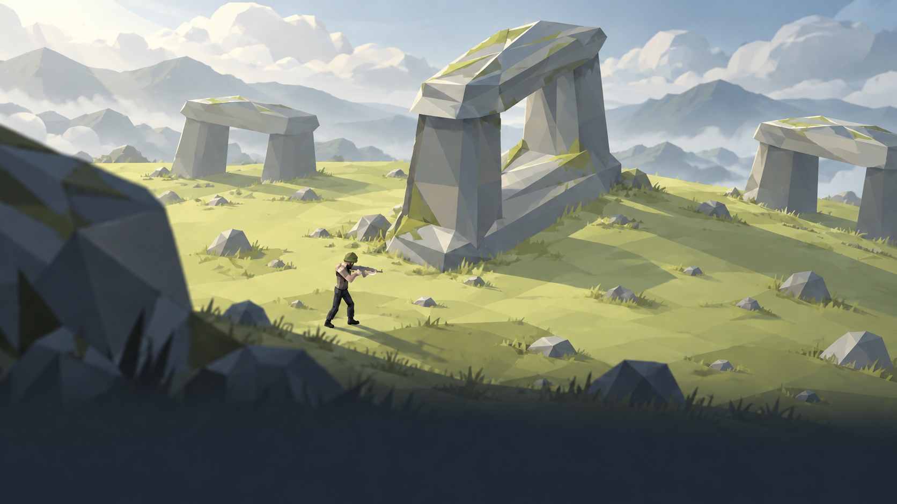
带苔色的灰色巨石门架、草地与高地天空，保留巨石环阵辨识度。
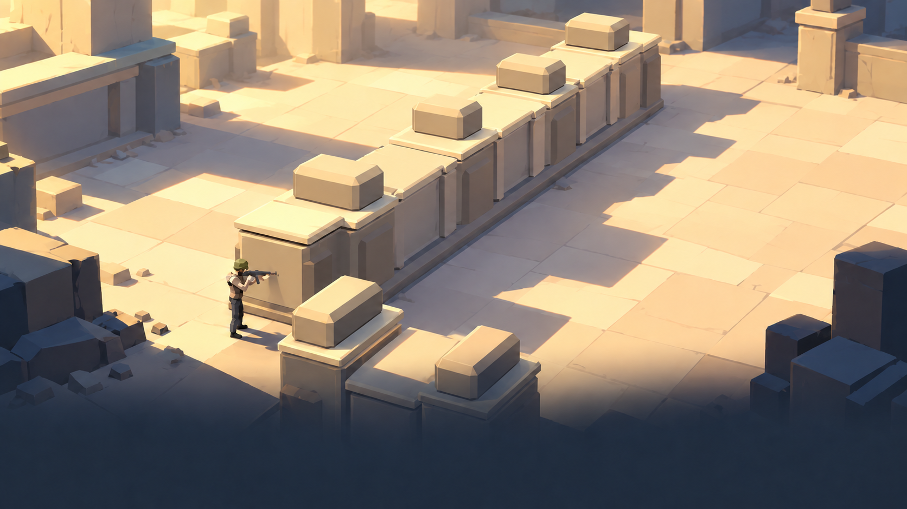
浅石色垛墙、方柱和宽阔铺地，以斜光强调防御结构。

正式资源证据仅用于核对题材与造型；上方是概念插画，光照、细节、镜头和布局不能视为游戏实拍。
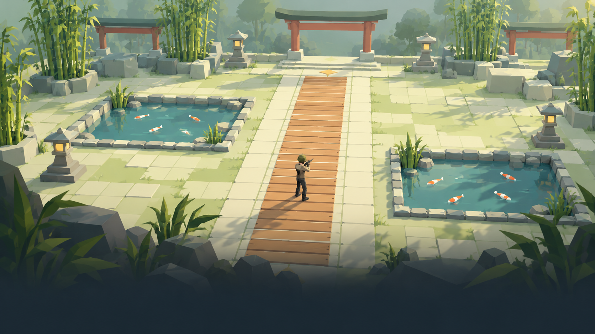
直木桥、成对浅池、锦鲤、竹丛和灯笼，形成清淡的青绿色段落。

正式资源证据仅用于核对题材与造型；上方是概念插画，光照、细节、镜头和布局不能视为游戏实拍。
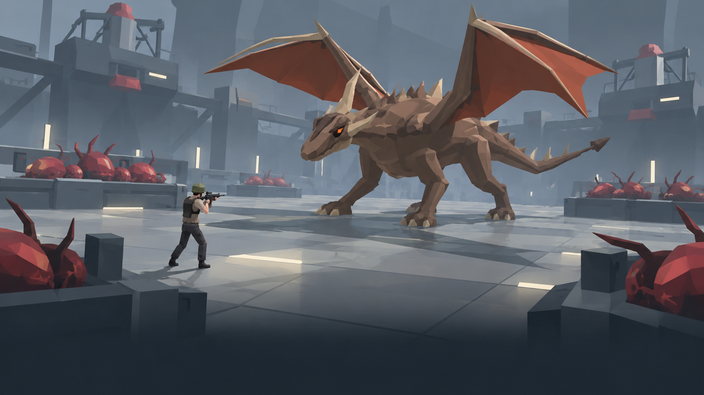
正式岩褐色小龙置于冷灰设施与红色巢体之间，突出终局压迫感，不改成火山洞穴。

正式资源证据仅用于核对题材与造型；上方是概念插画，光照、细节、镜头和布局不能视为游戏实拍。